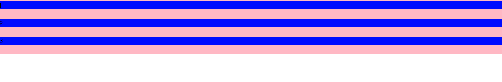
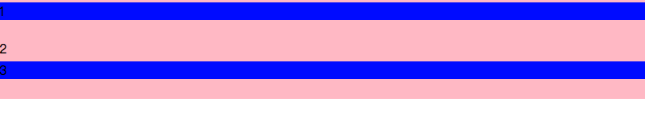
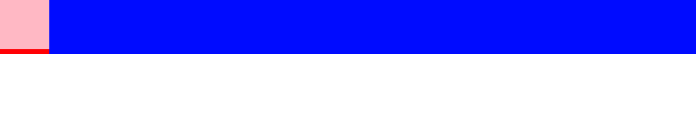
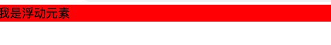

# BFC 定义
BFC (Block formatting context) 直译为 "块级格式化上下文"。它是一个独立的渲染区域，只有 Block-level box 参与， 它规定了内部的 Block-level Box 如何布局，并且与这个区域外部毫不相干。
# Box：css 布局的基本单位
Box 是 CSS 布局的对象和基本单位， 直观点来说，就是一个页面是由很多个 Box 组成的。元素的类型和 display 属性，决定了这个 Box 的类型。 不同类型的 Box， 会参与不同的 Formatting Context（一个决定如何渲染文档的容器），因此 Box 内的元素会以不同的方式渲染。让我们看看有哪些盒子：
- block-level box:display 属性为 block, list-item, table 的元素，会生成 block-level box。并且参与 block fomatting context；
- inline-level box:display 属性为 inline, inline-block, inline-table 的元素，会生成 inline-level box。并且参与 inline formatting context；
- run-in box: css3
# Formatting Context
Formatting context 是 W3C CSS2.1 规范中的一个概念。它是页面中的一块渲染区域，并且有一套渲染规则，它决定了其子元素将如何定位，以及和其他元素的关系和相互作用。最常见的 Formatting context 有 Block fomatting context (简称 BFC) 和 Inline formatting context (简称 IFC)。
BFC 是一个独立的布局环境，其中的元素布局是不受外界的影响，并且在一个 BFC 中，块盒与行盒（行盒由一行中所有的内联元素所组成）都会垂直的沿着其父元素的边框排列。
# BFC 的布局规则
- 内部的 Box 会在垂直方向，一个接一个地放置。
- Box 垂直方向的距离由 margin 决定。属于同一个 BFC 的两个相邻 Box 的 margin 会发生重叠。
- 每个盒子（块盒与行盒）的 margin box 的左边，与包含块 border box 的左边相接触 (对于从左往右的格式化，否则相反)。即使存在浮动也是如此。
- BFC 的区域不会与 float box 重叠。
- BFC 就是页面上的一个隔离的独立容器，容器里面的子元素不会影响到外面的元素。反之也如此。
- 计算 BFC 的高度时，浮动元素也参与计算。
# 如何创建 BFC
- float 的值不是 none。
- position 的值不是 static 或者 relative。
- display 的值是 inline-block、table-cell、flex、table-caption 或者 inline-flex
- overflow 的值不是 visible
# BFC 的作用
- 利用 BFC 避免 margin 重叠。
- 自适应两栏布局。
- 清除浮动。
# 总结
BFC 就是页面上的一个隔离的独立容器，容器里面的子元素不会影响到外面的元素。反之也如此。
因为 BFC 内部的元素和外部的元素绝对不会互相影响，因此， 当 BFC 外部存在浮动时，它不应该影响 BFC 内部 Box 的布局，BFC 会通过变窄，而不与浮动有重叠。同样的，当 BFC 内部有浮动时，为了不影响外部元素的布局，BFC 计算高度时会包括浮动的高度。避免 margin 重叠也是这样的一个道理。
# 代码展示
# 在无 BFC 时候
1 |
|

# 使用 BFC
1 | <section id="margin"> |

# 不与 float 重叠
1 | <section id="layout"> |

# 清除浮动
1 | <!-- BFC子元素即使是float，也会参与高度计算 --> |
